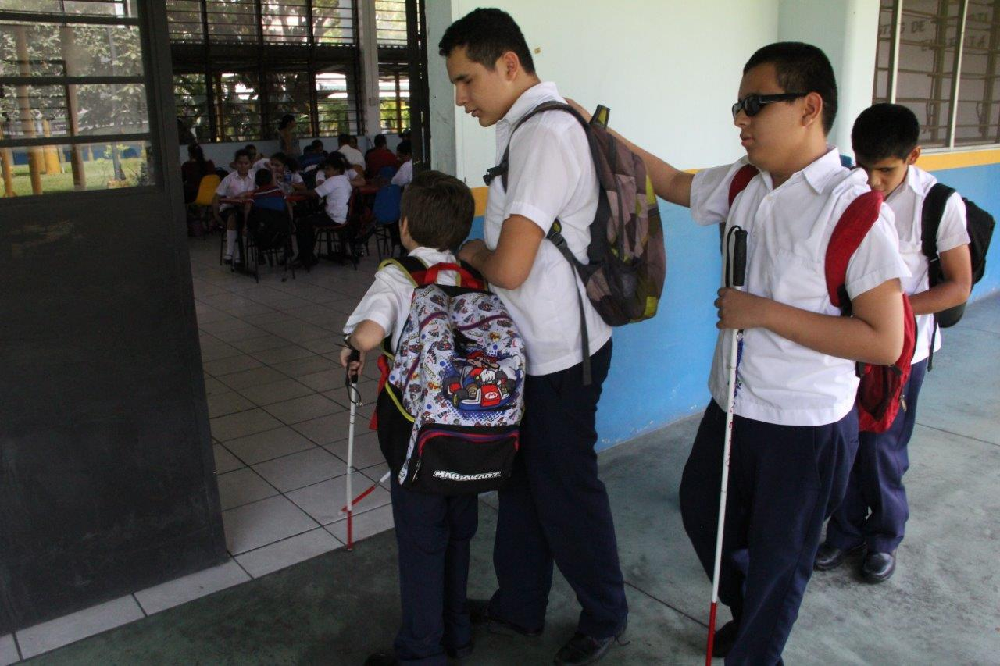

Educación inclusiva en El Salvador
La UNESCO ha sostenido que las escuelas comunes con una orientación inclusiva representan un medio más eficaz para combatir las actitudes discriminatorias, según el boletín sobre Educación Inclusiva. Sin embargo, también es cierto que los sistemas educativos, sólo pueden ser genuinamente inclusivo si las escuelas ordinarias son capaces de acoger a todos los niños y niñas, independientemente de sus condiciones físicas, intelectuales, sociales, emocionales, lingüísticas u otras y si bien a lo largo de la formación docente, se educa a los futuros maestros sobre las necesidades de las personas con discapacidad y con necesidades específicas de apoyo educativo, como lo son la dislexia, la dislalia, la discalculia, entre otras; los diferentes trastornos que pueden padecer los estudiantes, como lo son el síndrome de Tourette, el trastorno por déficit de atención e hiperactividad, entre otros; existe una escases de políticas e iniciativas verdaderamente efectivas en materia de educación inclusiva, pues, en su mayoría los docentes de los Centros Escolares, no conocen la Lengua de señas salvadoreña, no implementan estrategias de apoyo a los estudiantes neurodivergentes o con necesidades especifica; por su parte los Centros Escolares, no poseen libros en Braille ni otros recursos para estudiantes con discapacidad visual o auditiva, sin mencionar que la infraestructura de la mayoría de instituciones no cuenta con áreas de acceso para las personas con discapacidad física.
